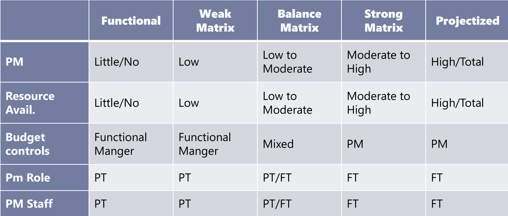

This section introduces the basic terminology of project management.
Project:
A Project is a temporary endevour, that produces a unique product,
service or result which is temporary and progressively alaborate. It
has a start date and an end date. It can be part of large program or
portfolio. Projects enables changes and takes the organisation from
current state to desired state.
Project Management:
Project management is the application of knowledge, skills, tools, and
techniques to satisfy project requirements. This is done by:
- Preparing a business case to justify the investment
- Estimating resources and times
- Developing and implementing a management plan for the project
- Leading and motivating the project delivery team.
- Managing the risks, issues, and changes on the project
- Monitoring progress against plan
- Closing the project in a controlled fashion when appropriate
Program:
Group of related projects managed in a coordinated way to obtain
benefits and control not available from managing them individually.
- Must be some value add in managing them together as a program
-
A project may or may not be part of a program, but a program will
always have projects
-
Focuses on the project interdependencies and helps to determine the
optimal approach for managing them
Portfolio:
A portfolio is a collection of projects, programs, subsidiary
portfolios, and operations managed as a group to achieve strategic
objectives.
Operation Management:
Considers the acquisition, development, and utilization of resources
that firms need to deliver the goods and services. It deals with the
ongoing production of goods and/or Services. Project is temporary
where as operations are on going.
Value:
A logical answer to why a project has to be undertool, like Money,
Brand Reputation, Customer Service, New or Change product or Service.
It is the result of the project.
Phases and Deliverables:
-
Phase: A phase is a collection of logically related
project activities that culminates in the completion of one or more
deliverables. The number of the phases depends on the industry type
and size and the complexity of the project.
-
Deliverables: A deliverable is any unique and
verifiable product, service or result, either tangible or intangible
and is accepted by the customer or sponsor for the phase
Project life cycle:
A representation of the phases that a project typically goes through
from start to finish. It is the process created by the project manager
to execute the project from start to the end. It can be either
predictive or adaptive
Project Governance:
It is a framework with in which the project decisions are made.Its
based on the structure, people and information. It is unique for every
organisation.
Stake Holders:
Individuals, group, or organization that may affect, be affected, or
perceive to be affected by the project.
Key Stakeholders:
- Project Manager - manages the project
- Customer - uses the project deliverable
-
Project team - the collection of individuals completing the project
work
- Project Sponsor – Provides resources and support
-
Functional Manager - Departmental Manager, i.e Manager of
Engineering, Vice President of Marketing, Director of IT. Functional
manager generally controls resources
Roles of PM:
-
Initiator: An initiator is someone who takes the
first step and proposes and idea or action.
-
Negotiator: A person who engages in a discussion to
reach a mutually agreeable solutions or outcomes.
-
Listener: Someone that pays attention to others'
ideas, thoughts and concerns , during conversations and discussions.
-
Coach: A person who guides and suppoers individuals
or teams in achieving their goals, improving performance and
enhancing their skills.
-
Working Member: An individual who activiely
participates as a member of a team or group.
-
Facilitator: Someone who manages group processes,
dicussions or meetings to ensure effective communication,
collaboration and decision making.
Mile stones and Task duration:
-
Milestone: A milestone is a significant achievement
or event in a project, that marks a keypoint or compeltion of a
major deliverable.
-
Task duration: It is the amount of time taken to
complete a specific task or activity in a project.
Organisational structures:
-
Functional organisation: Structure that groups
staff members according to their area of expertise (sales,
marketing, construction, etc.). Functional structures require the
project team members to report directly to the functional manager
-
Matrix organisations: There are three matrix
structures: weak, balanced, and strong. The different structures are
reflective of the project manager's authority in relation to the
functional manager's authority.
-
Projectized organisation: Structure where the PM
has the greatest amount of authority. The project team is assigned
to the project on a full-time basis. When the project is complete,
the project team members moves on to other assignments within the
organization.
-
Hybrid: Blend of different structures tailored to
fit an organisation.

Areas of a project:
- Scope: Work to be done.
- Schedule: Time to get the work done.
- Cost: Budget of the work.
- Quality: Customer satisfaction of the work.
-
Resources: Managing people and material resources.
-
Communication: All stakeholders ger the correct
information at the right time.
-
Risk: Identify and respond to the risks over the
lifecycle of the project.
-
Procurement: Acquiring the resources from outside
the project team.
-
Stakeholders' engagement: Keep all stakeholders
active and alert on the project.
Project Management Office:
Organizational Structure that standardizes the processes and
facilitates the sharing of resources, methodologies, tools, and
techniques
Types of PMOs:
-
Supportive: Supports the project manager, such as
providing templates, training, or lessons learned form other
projects.
-
Controlling: Determines the framework or
methodology and use of specific forms
-
Directive: Controls the project. PM will be assign
and report to the PMO.
Product Management Vs Project Management
Product management includes the entire life cycle of product starting
from thinking of a product, visualising, gathering the requirements,
building the product, sustaining the product, updating and finally
retiring the product. Where a project management is only a part of
product management.
Product Management Vs Project Management
| Product Management |
Project Management |
|
Product management encompasses the strategic planning,
development and lifecycle management of a product or service.
|
Focuses on the successful execution and delivery of specific
projects within a defined scope, timeline and budget.
|
|
It involves understanding market needs, defining product
strategy, gathering requirements and overseeing the product
development, launch and on going optimization.
|
Project managers are responcible for planning, coordinating and
managing activities required to achieve project goals.
|
|
Product managers are responcible for the overall success for the
product, allign it with business objective and customer demands.
|
They ensure project is completed on time, within the budget and
in accordance with the specified quality standards.
|
Risks, Issues, Assumptions and Constraints:
-
Risks: Risks are potential events or situation that
may occur in the future and have an impact on the project success.
-
Issues: Issues refer to problems or challenges that
rise during the course of the project. They are typically negative
events or circumstances,that can hinder progress or impact project
objectives.
-
Assumptions: Statements or beliefs that are
considered to be true or valid for the purpose of planning and
decision making.
-
Constraints: Limitations or restrictions that
affect project planning and execution.
- Scope
- Schedule
- Cost
- Risk
- Quality
- Resources
Project Management Approaches:
-
Predictive approach: The predictive approach
follows a linear and sequential process.
-
Adaptive approach: The adaptive approach focuses on
flexibility, collaboration and iterative development.
Predictive Vs Adaptive
| Predictive approach |
Adaptive approach |
|
It involves detailed planning and documentation upfront, with a
focus on predicting and defining the project scope , objectives,
timelines and deliverables.
|
Embrases change throughout the project and emphasizes on
continuous feedback and improvement.
|
| Extesive upfront planning. |
Iterative and increamental developement. |
| Sequential execution. |
Customer collaboration. |
| Emphasis on control and documentation. |
Emphasis on adaptability. |
|
Limited flexibility, limited changes with a well defined change
control process.
|
The adaptive approach is commonly used in agile methodologies
like scrum and kanban with self-selforganizing teams.
|
|
A hybrid approach is to use appropriate approaches depending on
the requirements, processes and project goals.
|
Emotional Intelligence:
Ability to recognise, understand and manage emotions, both in oneself
and in others. It involves being aware of ones' own emotions,
effectively handling them, empathising with others and using emotions
to guide thinking and behaviour.
EQ is essential for:
- Building relationships
- Communication and conflict management
- Motivation and influence
- Leadership and decision making
- Stakeholder management
Leadership Vs Management:
Leadership Vs Management
| Leadership |
Management |
| Focuses on inspiring and influencing others. |
Ensures work is completely efficiently |
|
Involves in setting directions, motivating and empowering
individuals
|
Involves planning, organising, coordinating and controlling
resources
|
| They inspire and influence others |
They maintain stability, control and order, ensuring established
processes and procedures are followed.
|
| They encourage collaboration, trust and empowerment |
Focuses on coordinating and directing tasks, resources and
processes to achieve predetermined objectives
|
| Do the right things |
Do things right |
|
A PM need to be a leader and a manager depending on the need
|